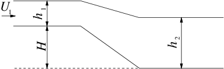

5.5.3. Exercise 5.3#
Si consideri il flusso d’acqua, \(\overline{\rho}=999\ kg/m^3\), nel canale rappresentato in figura. Nel primo tratto l’acqua scorre con una velocità uniforme \(U_1 = 1\ m/s\) e l’altezza del pelo libero rispetto al fondo del canale é \(h_1 = 1.5\ m\). Determinare la velocità dell’acqua \(U_2\) e l’altezza del pelo libero \(h_2\) nel secondo tratto del canale, sapendo che l’altezza del fondo del primo tratto rispetto al fondo del secondo tratto è \(H=0.5\ m\). Si trascuri qualunque effetto dissipativo.
(Soluzione 1: \(U_2 = 0.741\ m/s\), \(h_2 = 2.022\ m\). Soluzione 2: \(U_2 = 5.940\ m/s\), \(h_2 = 0.252\ m\))

Teorema di Bernoulli nel caso incomprimibile, non viscoso, stazionario, irrotazionale. Soluzione di equazioni di terzo grado: metodo grafico e numerico. Correnti in canali aperti: soluzioni «fisiche», numero di Froude \(Fr\), correnti subrcritiche e supercritiche.
L’esercizio viene risolto in due passi, che richiedono diversi livelli di conoscenza della dinamica dei fluidi in canali aperti: in un primo tempo, vengono ricavate le soluzioni ammissibili (\(h_2 > 0\), \(U_2 > 0\)) del problema; in un secondo tempo, viene scelta la soluzione fisica del problema, tra le due soluzioni ammissibili trovate in precedenza.
5.5.3.1. Parte 1.#
L’esercizio viene risolto mettendo a sistema il teorema di Bernoulli riferito a una linea di corrente sul pelo libero (sul quale agisce la pressione ambiente \(P_a\), costante) e l’equazione di continuità. Grazie alle ipotesi elencate in precedenza, si può scrivere il sistema risolvente come:
Il sistema è di due equazioni (non lineari) nelle incognite \(U_2\) e \(h_2\). Se si ricava una delle due incognite da un’equazione e la si inserisce nell’altra, si ottiene un’equazione di terzo grado. Per esempio, ricavando \(h_2\) dalla prima e inserendola nella seconda, per l’incognita \(U_2\) si ottiene l’equazione di terzo grado:
I metodi numerici convergono (quando convergono) a una soluzione, senza informazioni su quante soluzioni esistono effettivamente: prima di risolvere l’equazione di terzo grado con un metodo numerico è utile un primo approccio analitico al problema.
Per questo cerchiamo le soluzioni del sistema di due equazioni per via grafica. Le equazioni del sistema [eqn:bern_cont]{reference-type=»ref» reference=»eqn:bern_cont»} definiscono curve nel piano \((U_2,h_2)\). Se scegliamo di usare come asse orizzontale quello delle \(U_2\), la prima equazione definisce una parabola con la concavità diretta verso il basso (\(h_2 = - 0.5 U_2^2 /g +...\)), mentre la seconda un’iperbole.
Esistono due soluzioni con senso fisico (\(h_2 \ge 0, U_2 \ge 0\)). Ora che sappiamo quante soluzioni cercare e dove cercarle, possiamo procedere con un metodo numerico, dando guess iniziali in un intorno della soluzione. Le due soluzioni sono:
5.5.3.2. Parte 2.#
É plausibile farsi una domanda: al netto delle ipotesi fatte sul regime di moto (fluido incomprimibile, non viscoso), il modello è in grado di descrivere il fenomeno fisico e stabilire quale delle due soluzioni amissibili trovate è la soluzione «fisica»? Seguendo la trattazione del problema svolta in Chaudhry, Open-Channel Flow, paragrafo 2-7: Channel transition e paragrafi vicini, è possibile trovare l’unica soluzione fisica del problema. Viene introdotta la notazione usata da Chaudhry, che contrasta in parte con quella usata finora. Si tornerà alla notazione usata nella prima parte dell’esercizio, solo alla fine per scrivere i risultati.
La variabile \(z(x)\) descrive la quota del fondo del canale, la variabile \(y(x)\) descrive la profondità della corrente, riferita al fondo del canale. Si indica con \(Q = V y\) la portata in volume, costante. Il trinomio di Bernoulli \(H\), diviso per \(\rho\) e \(g\), è costante lungo il canale. Si ricorda che sulla linea di corrente in corrispondenza del pelo libero agisce una pressione costante uguale alla pressione ambiente \(P_a\). Se si introduce la coordinata orizzontale \(x\),
dove è stato introdotto il numero di Froude \(\textit{Fr} = V(y)^2 / g y\), e qui è stata esplicitata la dipendenza dalla profondità \(y\), funzione a sua volta funzione della coordinata \(x\). Si trova così il legame tra la profondità della corrente \(y(x)\), la quota del fondo \(z(x)\) e lo stato della corrente, descritto dal numero di Froude.
Vengono definiti due regimi di moto: subcritico \(\textit{Fr} < 1\), supercritico \(\textit{Fr} > 1\). Il profilo del fondo \(z(x)\), e quindi la sua derivata, è noto dal progetto del canale. La profondità della corrente \(y(x)\) può essere ottenuta integrando l’eq. [eqn:flow_depth]{reference-type=»ref» reference=»eqn:flow_depth»} con le condizioni iniziali note sulla sezione di ingresso.
Per risolvere il nostro esercizio è sufficiente ragionare sui segni dei tre termini dell’eq. [eqn:flow_depth]{reference-type=»ref» reference=»eqn:flow_depth»}: \(dz/dx \le 0\), quindi i due fattori alla destra dell’uguale devono essere discordi. Il numero di Froude sulla sezione di ingresso del problema vale \(\text{Fr}_1 = U^2_1 / (g h_1) = 0.068\), quindi il contenuto della parentesi tonda è negativo (e negativo rimane, al variare di \(x\); di questo dovete fidarvi…). Deve quindi essere \(dy/dx \ge 0\). Tornando alla notazione usata nella prima parte dell’esercizio, dove la profondità della corrente è indicata con \(h(x)\), \(dh(x)/dx \ge 0\). Poichè la profondità della corrente aumenta sempre, la soluzione «fisica» tra le due ammissibili è la soluzione \(A\), per la quale \(h_2 > h_1\).
5.5.3.3. Cosa non è stato detto.#
É stato fatto solo un accenno al ragionamento che consente di determinare l’unica soluzione «fisica» del problema delle correnti in canali aperti che variano con continuità. Non si dirà nulla sui salti idraulici (che portano la corrente da uno stato supercritico a uno subcritico), dei quali si possono trovare esempi nei fiumi o sul fondo di un lavandino. Si accenna solo alla uguaglianza formale del problema del moto di un fluido incomprimibile in un canale aperto, con il moto monodimensionale di un fluido comprimibile, dove il ruolo del numero di Froude \(\textit{Fr}\) sarà svolto dal numero di Mach \(M\), la definizione di stato sub- e supercritico, sarà sostituita da quella di condizione sub- e supersonica, il salto idraulico troverà il suo fenomeno corrispondente nelle onde d’urto.